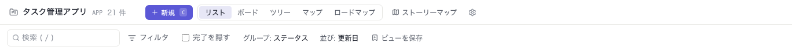
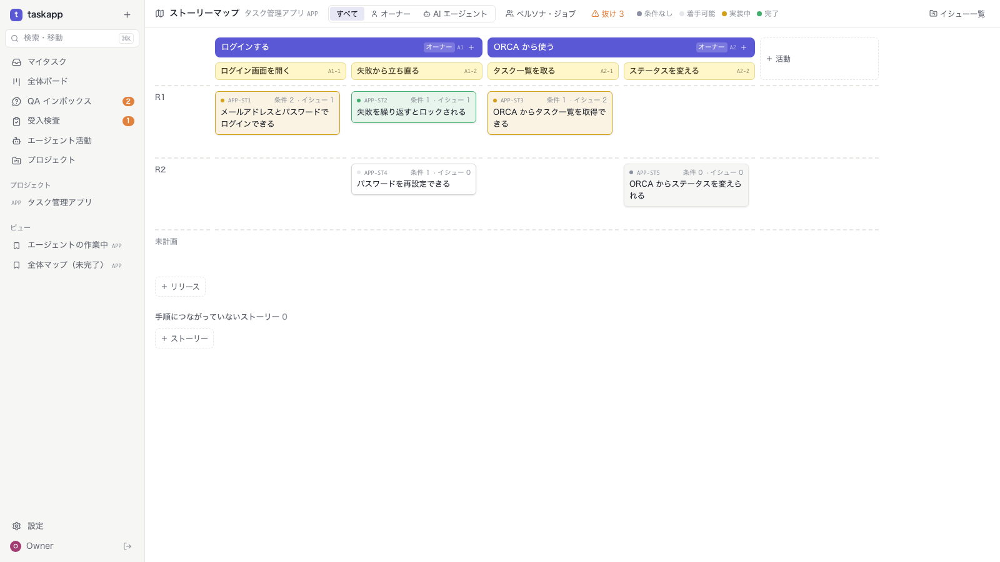
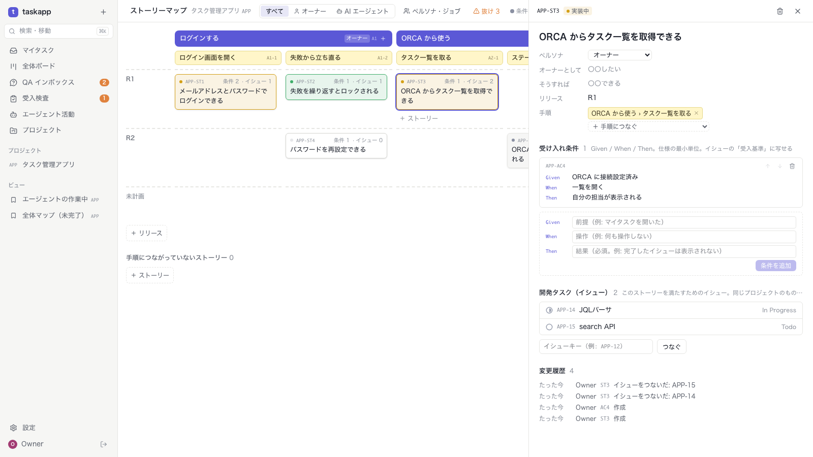
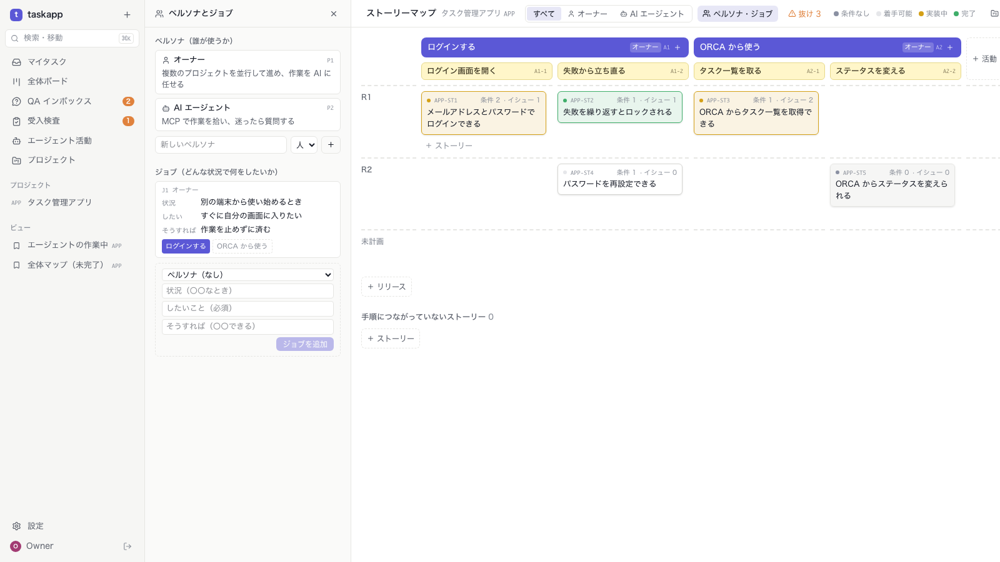
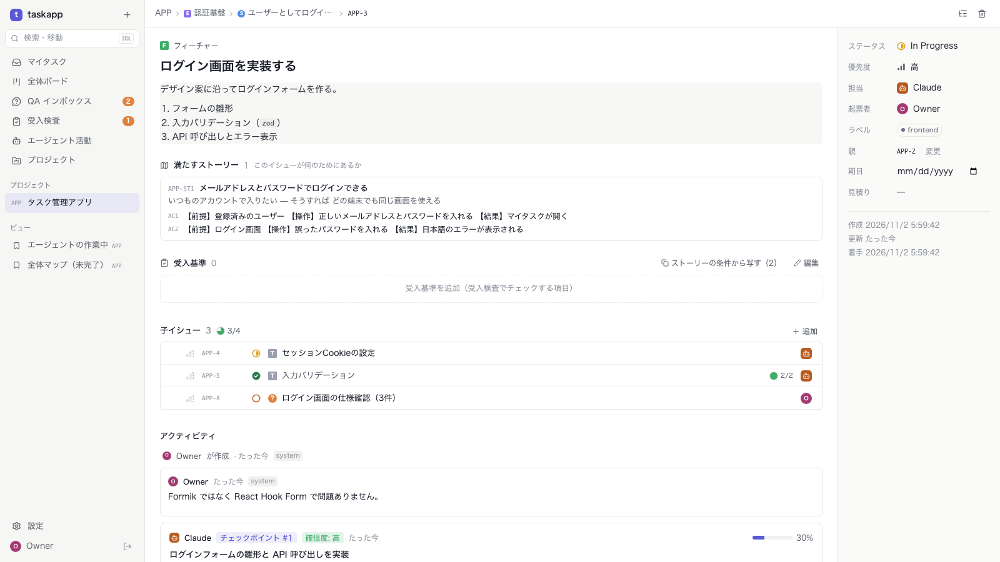

DEV CYCLE · M1 IMPLEMENTED
要求の層（ペルソナ・ジョブ・ストーリーマップ・受け入れ条件）を案 A で追加した。
新しいテーブル 11、新しい画面 2、変わった画面 2
設計 docs/08-devcycle.md · ER docs/04-er-diagram.md
2026-11-02 · 確認待ち
01 · まとめ
| テスト | 件数 | 増えた分 |
|---|---|---|
| API テスト（言語非依存） | 201 件すべて成功 | +12（storymap.test.ts 9、契約 3） |
| 画面テスト（Playwright） | 38 件すべて成功 | +4（storymap.spec.ts） |
| Go の単体テスト | すべて成功 | +2（キーの解釈、カードの色の判定） |
2 / 12
02 · DB の変更点（ER 図）
3 / 12
03 · DB: 新しいテーブル
| テーブル | 層 | 役割 | 主な列 |
|---|---|---|---|
| req_personas | L1 | ペルソナ（誰が使うか） | num(TAPP-P1), name, kind human|agent, description |
| req_jobs | L2 | ジョブ（状況・したいこと・そうすれば） | num(J3), persona_id, situation, motivation（必須）, outcome |
| req_activities | L3 | ストーリーマップの背骨 | num(A1), persona_id, name |
| req_steps | L4 | 活動の手順 | activity_id, num（活動の中で: A1-2）, name |
| req_stories | L5 | ストーリー。完了で閉じない | num(ST12), title, persona_id, i_want, so_that, release |
| req_criteria | L6 | 受け入れ条件 | story_id, num(AC42), given_text, when_text, then_text（必須） |
| req_job_activities | — | ジョブ ⇄ 活動 | job_id, activity_id |
| req_story_steps | — | ストーリー ⇄ 手順（マップ上の置き場所） | story_id, step_id |
| req_story_issues | — | ストーリー ⇄ イシュー（同じプロジェクト） | story_id, issue_id |
| req_counters | — | キーの連番 | project_id, kind, next |
| req_changes | — | 変更履歴（誰が・いつ・何を） | entity_key, story_id, actor_id, action, detail(JSON) |
全テーブルに position・created_at・updated_at（中間テーブルと履歴以外）。エクスポート（JSON）にも親から順に入る
4 / 12
04 · DB: 決めたこと
5 / 12
05 · UI の変更点
| 画面 | 区分 | 変わったこと |
|---|---|---|
| S15 ストーリーマップ | 新規 | /p/:key/storymap。横に活動と手順、縦にリリース。カードの色・抜けの一覧・ペルソナで絞り込み。活動・手順・ストーリーはその場で追加 |
| S16 ストーリー詳細 | 新規 | S15 の右のサイドピーク。ペルソナ・したいこと・リリース・手順・受け入れ条件（Given/When/Then、並べ替え）・イシューのつなぎ外し・変更履歴 |
| ペルソナとジョブ | 新規 | S15 の左のパネル（別の画面は作らない）。ジョブは活動のボタンでつなぐ |
| S06 イシュー一覧 | 変更 | プロジェクトのヘッダーに「ストーリーマップ」への入口 |
| S09 イシュー詳細 | 変更 | 「満たすストーリー」（このイシューが何のためにあるか）。ストーリー/フィーチャーの受入基準に「ストーリーの条件から写す」 |

6 / 12
06 · S15 ストーリーマップ（新規）

7 / 12
07 · S16 ストーリー詳細（新規）

8 / 12
08 · ペルソナとジョブ（新規）

9 / 12
09 · S09 イシュー詳細（変更）

10 / 12
10 · API と MCP の変更点
| パス（/api/v1/projects/{key}/…） | 操作 |
|---|---|
| storymap | GET：マップ全体と抜け（gaps） |
| personas · jobs | GET 一覧・POST 作成、{キー} に PATCH・DELETE（アーカイブ） |
| activities、activities/{キー}/steps、steps/{キー} | POST・PATCH・DELETE |
| stories、stories/{キー} | GET 一覧・POST、GET（条件・履歴つき）・PATCH・DELETE |
| stories/{キー}/criteria、criteria/{キー} | POST・PATCH・DELETE |
| stories/{キー}/issues/{イシューキー} | PUT つなぐ・DELETE 外す |
| /api/v1/issues/{キー}（既存） | stories（キー・タイトル・したいこと・条件）を追加。一覧には入れない |
11 / 12
11 · 確認したいこと
12 / 12